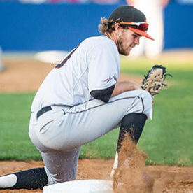

Meet the Team
Jeremy Ronquillo is the product owner of Team Cache Money. He is pursuing his bachelors and masters at University of the Pacific as a Computer Science student. Next semester, he will be attending his Co-Op at ON.Lab as a QA tester. In his free time, he, sings, practices violin, plays mobile games, creates projects, and actively seeks to assist people learning computer science and programming.

Devin Lim
Devin Lim is currently enrolled as a Computer Science student at University of the Pacific with the concentration on Software Engineering. He will be on a Co-Op at On.Lab as a QA Automation Intern from Summer 2017 until the end of Fall 2017. After he finishes his last semester at UoP and receives his Bachelor's Degree, he would be seeking for a job that would further deepen his knowledge in the world of Computer Science. His favorite team is Dodgers and favorite food is Korean BBQ and Hot Pot.

Mitchell Chang
Mitchell Chang is currently enrolled as a Computer Science student at University of the Pacific with the concentration on Software Development. He will be on a Co-Op at Intel as a Technical SSD Intern from Summer 2017 until the end of Fall 2017. After he finishes his last semester at UoP and receives his Bachelor's Degree, he would be seeking for a job that would further deepen his knowledge in the world of Computer Science. His favorite food is home-made potato salad and needs boba almost every day to fuel his life.

Nate Verlin
Nathan (Nate) Verlin is a Computer Science student (con. Software Development) at the University of the Pacific. He is also a intercollegiate athlete (baseball) and him and the Tigers compete in the West Coast Conference. Nate was named to the All-WCC academic team in the spring of 2016 and will graduate with a bachelor's degree in the Spring of 2018. He will also be completing a masters degree beginning in the Fall of 2017 and completing after his 5th year of athletic eligibility. Nate has interests in software and technologies that can be applied to numerous fields, specifically sports.

Michael Myers
Michael is a second-year Computer Science student at the University of the Pacific. His favorite programming language is Python due to its ease of use and readability. He loves anime, board games, card games, video games, and Jesus, though he struggles with his sin. His future is uncertain in his mind, but he does not worry as he trusts in the Lord. His hope is to use programming to make others' lives easier and to give them a better life.
Kadri Nizam
Hailing from Malayisa, Kadri is a sophomore in University of the Pacific pursuing a triple degree in Computer Science, Physics, and Applied Math. Kadri is pursuing these degrees to hopefully practice it in the field of High-Performance Computing for research and development in Physics. He is currently doing research under the mentorship of Dr. Kieran Holland with the hopes of publishing in a Physics Journal. He is well versed in C++, Java, and MatLab. His favourite food is the famous Malaysian Nasi Lemak.